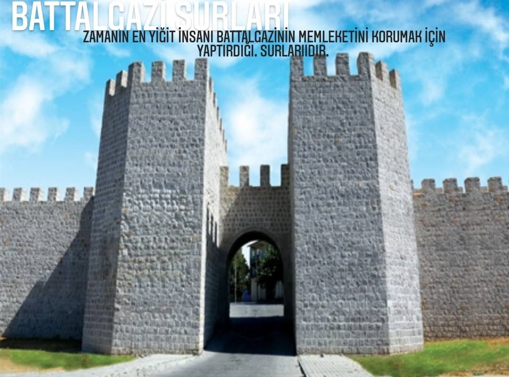

Roma imparatoru Trajanus MS.98-117 Malatya’nın ilk surlarını yaptırmıştır.Trajanus’un yaptırdığı surların önemi, şehrin gelişmesiyle birlikte Diocletianus MS.284-305 zamanında daha da artmıştır. Buna paralel olarak Costance’nin yaptırdığı surlar, bilhassa Sasani-Bizans mücadelelerinde Malatya' nın önemli bir hudut şehri hüviyetini kazanmasıyla beraber, daha da bir önem kazanmıştır.532 yıllarında İmparator Jüstinianus (527-565) bu surları tamamlamıştır.Roma-Bizans-Sasani gerekse Bizans-Arap mücadelelerinde önemli tahribatlara maruz kalmış, her defasında aslına uygun tarzda onarılarak Osmanlı dönemine kadar intikal etmiştir.
Evliya çelebi kale hakkında genel bilgi vermektedir.Beş köşeli düzgün taş ile yapılmış Malatya kalesinden ”Rakabe Kalesi” diyerek bahsetmekte,devamında: Hz.Yunus Aleyhüsselamın Musul şehrinde iken imana getirdiği Rakabe ismindeki Kayser’in Malatya’nın suyunu ve havasını çok beğendiğinden burada kale yaptırdığını söylemektedir.
Bölgenin Türk hakimiyetine geçtiği sırada Malatya surlarının çok zayıf bir halde olduğu ve şehrin adeta sursuz bir vaziyette bulunduğu, Büyük Selçuklu sultanı Tuğrul bey, Türkmenleri anadoluya sevk ederken 1057 yılında Kemah, Arapkir üzerinden Malatya’ya ulaşan Türklerin şehri kolaylıkla ele geçirdiği kaynaklarda anlatılmıştır. Ancak daha sonra Constantin x.dukas tarafından sur hendeğinin daha da genişletilerek 1060 ‘da yeniden yaptırıldığını incelemekteyiz.O sebeple şehir zaman zaman vuku bulan Türk taarruzlarına karşı direnmiş, 18 Eylül 1102’de Danişmendli Gümüştekin Ahmed Gazi’nin eline geçen surlar yeniden onarılmıştır. XVII.Yüzyıla kadar önemini koruyan surlar, bu yüzyıldan sonra surlar büyük ölçüde yıkılarak harabe haline gelmiştir.
